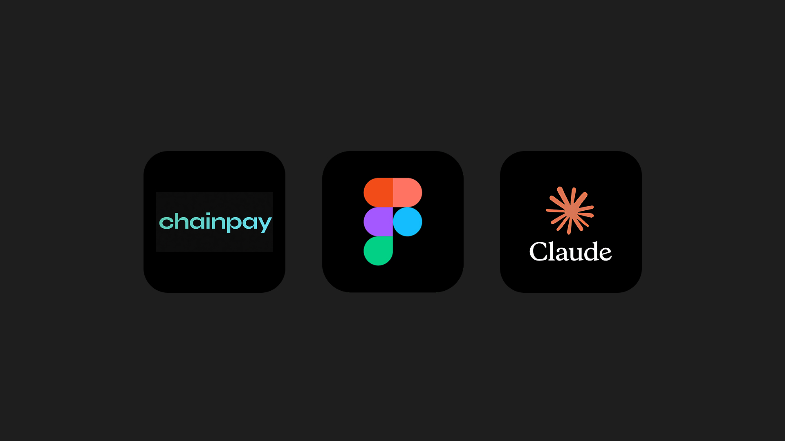
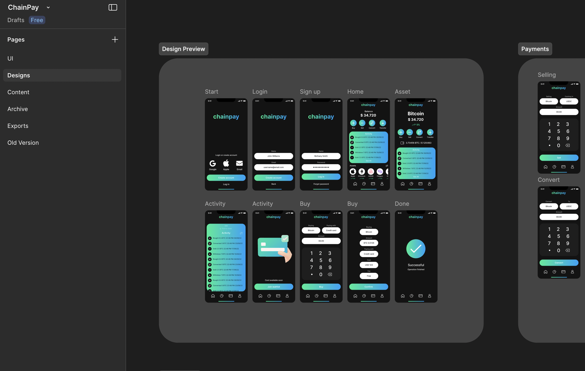
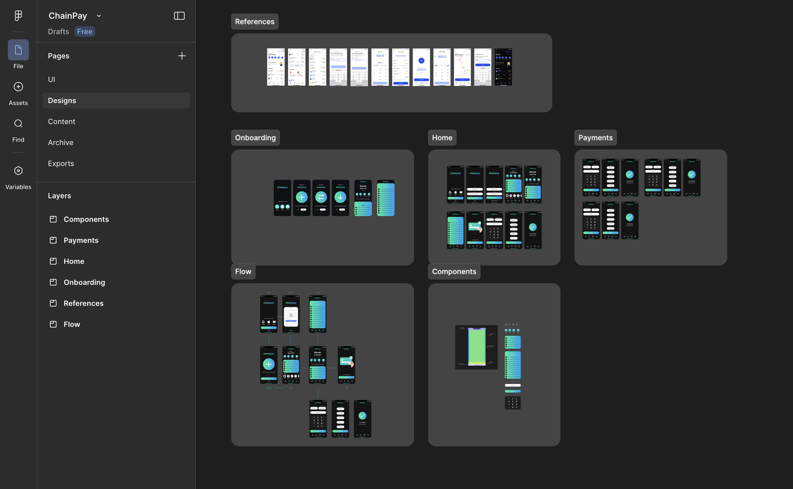
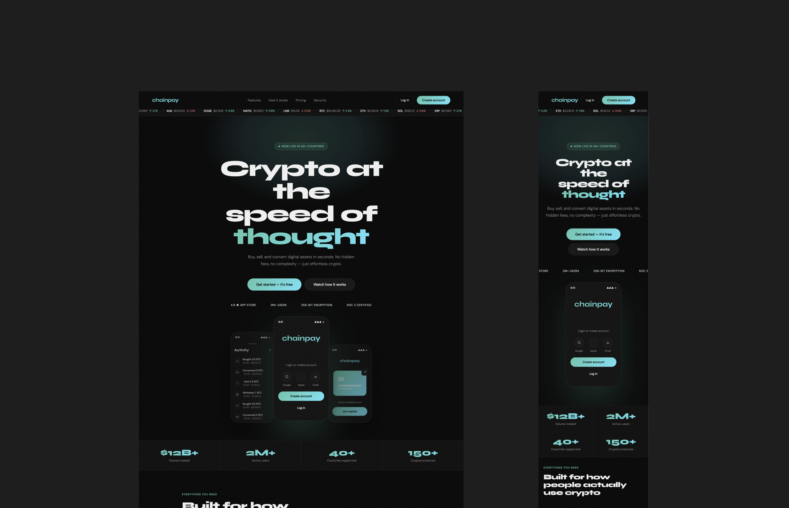

Case Studies
Design Portfolio
Bobcat
Challenge
Rebuild Bobcat's Figma design system from the ground up — fragmented files, duplicate components, outdated patterns.
My Role
Key role in audit, governance definition, full rebuild and documentation.
Process & Key Decisions
Full component inventory first — mapped what existed, what was live, what could go. Rebuilt on a variable-based foundation with per-component Do's and Don'ts, so teams could actually use it correctly without asking.


Outcome
A scalable, living system any stakeholder can navigate and use without friction.
Whirlpool
Challenge
Improve homepage performance with a constrained budget and one hard rule: no new features, no new content.
My Role
Lead UX designer. Research synthesis, concept development and user testing.
Process & Key Decisions
Rich internal data, well-defined personas: the work was ruthless prioritization. Same content, restructured around real user needs. Two concepts went to live testing. Option A won.


Outcome
Clearer navigation, faster paths to purchase, stronger brand perception. The biggest gains came from better organization, not more features.
KitchenAid
Challenge
Boost promotional conversions for KitchenAid Canada within an established design system and tight stakeholder constraints.
My Role
UX designer. Component refiniment and A/B testing.
Process & Key Decisions
Promotions weren't reaching users at the right moment. The proposed "Promo Drawer" carousel — faced pushback. A/B testing let the data decide.


Outcome
+60% in sale-page visits. +13% lift in orders. Decisions backed by data, not arguments.
Chainpay
Challenge
Build an intuitive finance app and launch strategy from scratch for everyday people who find crypto confusing.
My Role
End-to-end UX/UI: app, web, landing pages and paid media assets.
Process & Key Decisions
Translated complex financial data into simple, jargon-free user flows and designed the complete digital ecosystem (app, web, and marketing). In fintech, trust is the conversion mechanism: every surface was built to reduce friction and signal security.




Outcome
A highly accessible fintech product that made users feel confident and capable managing their money securely.
Traders Central
Challenge
Lead a full rebrand and product overhaul for a fintech startup scaling fast across international markets.
My Role
Design lead and team lead — recruited and mentored 5 designers while owning product, campaigns and brand system.
Process & Key Decisions
160K+ active users, multiple markets — consistency was non-negotiable. Built a visual language that stretched across product UI, global campaigns and local markets. Strategy stayed centralized; execution was delegated for real team ownership.


Outcome
Scaled across financial markets with a coherent brand identity. Continuous testing kept the product improving post-launch.
Kinfolk
Challenge
Design a full D2C e-commerce experience for an outdoor gear brand: web, native iOS, and the content infrastructure to sustain it.
My Role
End-to-end product designer and content systems lead — UX, Shopify, iOS app and AI-powered content pipeline.
Process & Key Decisions
Web and mobile designed in parallel — no mobile afterthought. On content: built a ComfyUI workflow to auto-generate product photography from a single image. No photoshoots, no bottlenecks, optimized for both SEO and AI search.


Outcome
A unified shopping experience across web and iOS — plus a content system that keeps producing without adding headcount.